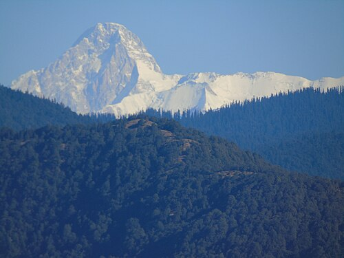

Kamet is a majestic peak in the Garhwal Himalayas of Uttarakhand, India, standing at 7,756 meters (about 25000ft) above sea level. It is the second-highest mountain in the region after Nanda Devi and the 29th-highest mountain in the world. It is known for its striking pyramid-like shape and flat summit. Kamet has been admired by climbers and adventurers. The mountain lies close to the Tibetan Plateau, making it both geographically significant and visually spectacular.
Fun Facts about Kamet Mountain
- The first successful ascent of Kamet was in 1931 by a British expedition led by Frank Smythe. It was the highest peak ever climbed at that time.
- Kamet is surrounded by several glaciers, including the East Kamet Glacier and West Kamet Glacier, which feed rivers in the region.
- Despite its remote location, Kamet has been an important training ground for high-altitude mountaineering expeditions.
-
Locals sometimes call Kamet the "flaming mountain" because its snowy slopes reflect golden hues at sunrise and sunset.
View Image
{kind=link}